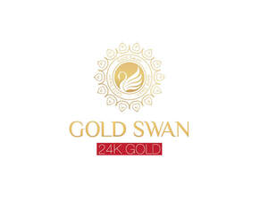

Trade Mark Journal No.2025/045 7 November 2025
UK00004283291 24 October 2025 (3,5)

- Class 3
- Moisturisers [cosmetics]; Anti-aging moisturizers used as cosmetics; Skincare cosmetics; Skin moisturizers used as cosmetics; Cosmetics; Beauty serums; Facial creams [cosmetics]; Hairstyling serums; Anti-ageing serums for cosmetic purposes; Skin masks [cosmetics]; Suncare lotions [for cosmetic use]; After-sun oils [cosmetics]; Mousses [cosmetics]; Body creams [cosmetics]; Cosmetic moisturisers; Skin fresheners [cosmetics]; Cosmetics in the form of lotions; Hair cosmetics; Cosmetic creams and lotions; Facial gels [cosmetics]; Beauty serums with anti-ageing properties; Anti-aging creams [for cosmetic use]; Hair serums; Tanning gels [cosmetics]; Fluid creams [cosmetics]; Anti-ageing creams [for cosmetic use]; Moisturising skin lotions [cosmetic]; Self-tanning preparations [cosmetics]; Cosmetic hair lotions; Tanning oils [cosmetics]; Serums for cosmetic purposes; Skin recovery creams [cosmetics]; Anti-aging moisturizers; Body and facial creams [cosmetics]; After-sun milks [cosmetics]; Cosmetics in the form of creams; Non-medicated skin serums; Cosmetics for eye-lashes; Anti-aging serum for cosmetic use; Anti-wrinkle creams [for cosmetic use]; Cosmetics and cosmetic preparations; Night creams [cosmetics]; Milks [cosmetics]; Anti-aging skincare preparations; Moisturising skin creams [cosmetic]; Make-up palettes containing cosmetics; After-sun lotions [for cosmetic use]; Non-medicated cosmetics; Tanning milks [cosmetics]; Cosmetic products in the form of aerosols for skincare; Facial moisturisers [cosmetic]; Skin cleansers [cosmetic]; Skin creams [for cosmetic use]; Cosmetic creams for the skin; Skin creams [cosmetic]; Sunscreen creams [for cosmetic use]; Beauty lotions; Skin care cosmetics; Emollient preparations [cosmetics]; Eyebrow cosmetics; Skin balms [cosmetic]; Skin care lotions [cosmetic]; After-sun milk [cosmetics]; Hair care lotions [for cosmetic use]; Suntan oils [cosmetics]; Lip cosmetics; Suntan lotion [cosmetics]; Cosmetic facial lotions; Facial lotions [cosmetic]; Cosmetic nourishing creams; Hair care serums; Creams (Cosmetic -); Cosmetic creams; Tanning preparations [cosmetics]; Suncare lotions; Humectant preparations [cosmetics]; Anti-aging creams; Body gels [cosmetics]; Nail cosmetics; Cosmetics for suntanning; Cosmetics preparations; Cosmetics for use on the skin; Smoothing emulsions [cosmetics]; Hair care creams [for cosmetic use]; Moisturizers; Body and facial gels [cosmetics]; Cosmetics for eye-brows; Organic cosmetics; Cosmetic creams for skin care; Skin care creams [cosmetic]; Cosmetics containing panthenol; Sun protecting creams [cosmetics]; Anti-ageing creams; Cleansing creams [cosmetic]; Beauty care cosmetics; Colour cosmetics for the skin; Moisturising creams, lotions and gels; Moisturising gels [cosmetic]; Lotions for the skin; Acne cleansers, cosmetic; Cosmetics containing keratin; Skin lotions; Non-medicated cosmetics and toiletry preparations; Hydrating creams for cosmetic use; Anti-ageing serum; Facial creams [cosmetic]; Facial creams [for cosmetic use]; Cosmetics for animals; Sun blocking lipsticks [cosmetics]; Cosmetic suntan lotions; Skin moisturizers; Skin hydrators for cosmetic purposes; Cosmetics in the form of powders; Facial cleansers [cosmetic]; Natural cosmetics; Cosmetics for the use on the hair; Hair moisturizers; Sunscreens [for cosmetic use]; Cosmetics in the form of oils; Perfumed powders [for cosmetic use]; Skin toners [cosmetic]; Sun-tanning preparations [cosmetics]; Cosmetic skin fresheners; Hair tonics [for cosmetic use]; Colour cosmetics; Cosmetic skin enhancers; Eye cosmetics; Cosmetic massage creams.
- Class 5
- Serums; Pharmaceutical skin lotions; Moisturising creams [pharmaceutical].
ARTEON TECHNOLOGY LIMITED